Foto #1: Franklin Delano Floyd y Suzanne Marie Sevakis

Esta es la imagen principal sobre Franklin Delano Floyd. En realidad, la niña es la hijastra de Floyd, Suzanne Marie Sevakis, a la que secuestró alrededor de 1974, cuando Suzanne tenía menos de 10 años. La crió como si fuera su hija, la llevó a la escuela secundaria bajo varios seudónimos, tuvo un hijo con ella en 1988 y se casó con ella en 1989, bajo el nombre de Tonya Hughes. En 1990, Suzanne decidió dejar a Floyd y llevarse a su hijo, Michael, con ella. En abril de ese año, la encontraron golpeada y magullada en el arcén de una carretera, y posteriormente murió en el hospital. Michael fue acogido y adoptado, pero en 1994 fue secuestrado por Floyd y nunca más se le volvió a ver.
Foto #2: El personal del campamento se toma un día libre
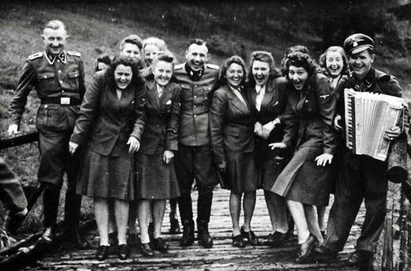Estas fotos del personal de Auschwitz disfrutando de agradables días libres siempre se me quedan grabadas. Parecen monitores de campamento, pero su trabajo consiste en matar a gente de forma horrible, y lo disfrutaban. La mayoría probablemente se quitó la vida poco antes o después de que se tomaran las fotos.
Foto #3: Niños judíos cogidos de la mano mientras caminan sin saberlo hacia su muerte en las cámaras de gas de Auschwitz
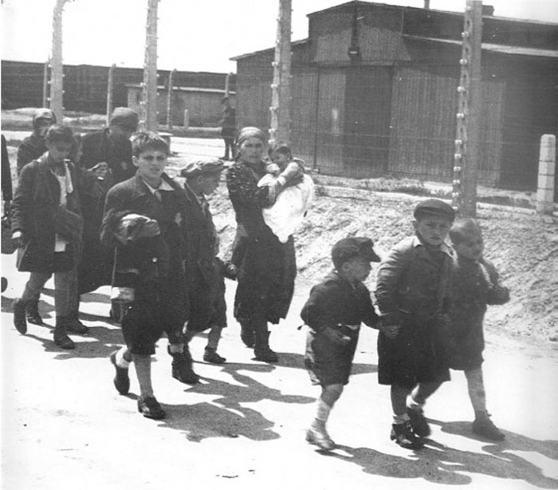El redditor KermitTheFraud92 fue muy abierto al afirmar que "no pueden atribuirse el mérito" de la pregunta que publicaron en r/AskReddit. Se inspiraron en otras preguntas similares, formuladas por otros usuarios del sitio con anterioridad. "He visto preguntas similares publicadas en el subreddit en el pasado y siempre han obtenido buenos resultados. Siempre es interesante volver a preguntarlo cada dos años porque puedes obtener resultados diferentes e incluso nuevos", comentan a Bored Panda. En opinión del redditor, el hilo atrajo a la gente por lo interesante del tema. "Estoy bastante abrumado por las respuestas y todavía no las he leído todas", dijo que recibió muchos comentarios de otros redditors.
Foto #4: Esta foto puede no parecer gran cosa al principio
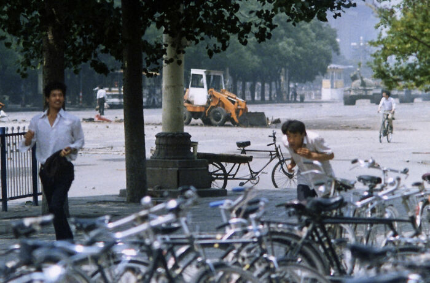Ahora, echa un vistazo al tipo del fondo, arriba a la izquierda. Mira lo que hay en el fondo, arriba a la derecha. Ese es el hombre del tanque de la masacre de la Plaza de Tiananmen. Se cree que es el estudiante Wang Weilin, esta foto fue tomada minutos antes de la famosa imagen. Nadie sabe qué pasó con Weilin. Puede haber sido ejecutado, puede estar todavía en prisión, puede haber huido a otro país.
Foto #5:Esta es una imagen del programa de citas de los años 70: Gameshow, The Dating Game
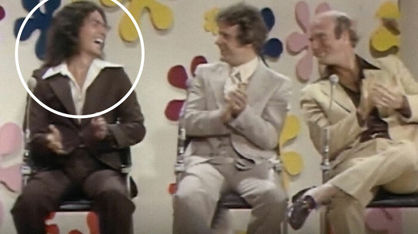El hombre dentro del círculo es el asesino en serie Rodney Alcala. En el momento de esa aparición en el programa, había violado a varias mujeres y asesinado al menos a una. Ganó el juego, pero la mujer nunca acudió a la cita con él. Puedes imaginar lo aliviada que está.
Foto #6: Esta foto siempre me emociona de alguna manera
Sólo un par de astronautas posando en gravedad cero felices de tener una oportunidad tan increíble, como suelen hacer los astronautas. Mientras tanto, no tienen ni idea de que su transbordador espacial está irremediablemente dañado y que, de hecho, morirán en unos días durante la reentrada (que hasta entonces se consideraba "segura"). Se trata de la tripulación del Columbia, para quienes no lo sepan, cuyas baldosas fueron dañadas durante el lanzamiento del transbordador al espacio por la espuma. Nadie supo la gravedad de los daños hasta que se desintegró.En opinión de KermitTheFraud92, "definitivamente" no podemos determinar cómo es realmente una persona, basándonos sólo en sus fotos. Una foto "puede darte pistas y demás, pero nunca puedes saber realmente cómo es una persona sólo por una foto". El redditor señaló que la verdad puede ser increíblemente perturbadora cuando la conoces: "Algunas de esas fotos muestran a personas sonriendo a la cámara cuando acaban de asesinar a un ser querido hace unos minutos". El hilo del redditor Gustavo se hizo viral casi inmediatamente. La pregunta obtuvo más de 57,2k upvotes y consiguió tantos premios que fue declarado post "Top Awarded". En el momento de escribir este artículo, el hilo tenía casi 17.000 comentarios. Y no es de extrañar, porque el tema es absolutamente fascinante. Te atrae y no quiere dejarte ir. Como el abismo.
Foto #7: Padre e hija en Omagh, Irlanda del Norte
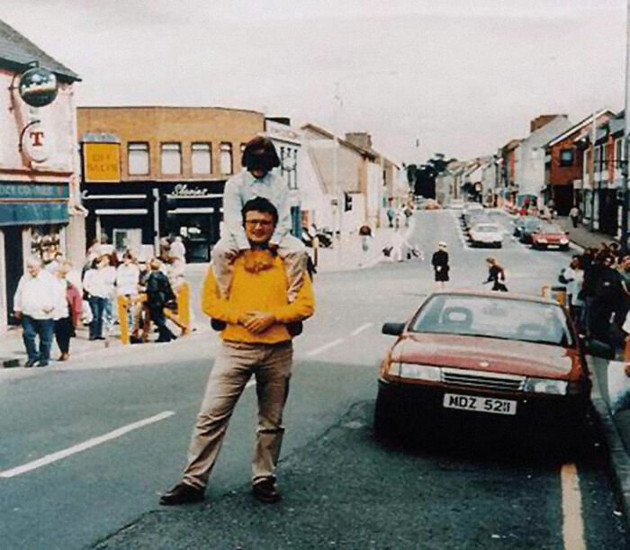Esta feliz foto de padre e hija fue tomada momentos antes del atentado con coche bomba en Omagh en 1998. La bomba colocada por un grupo conocido como el IRA Auténtico estaba en este coche rojo y mató a 29 personas, incluido el fotógrafo que tomó esta foto. Tanto el padre como la hija sobrevivieron.
Foto #8: Esta foto me da escalofríos
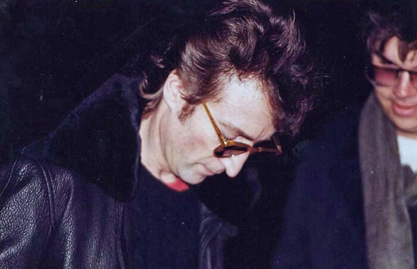John Lennon firmó un autógrafo a su asesino, Mark Chapman, apenas unas horas antes del asesinato y luego le preguntó "¿Eso es todo?". Chapman incluso llevaba una pistola en ese momento.
Foto #9: El físico estadounidense Harold Agnew
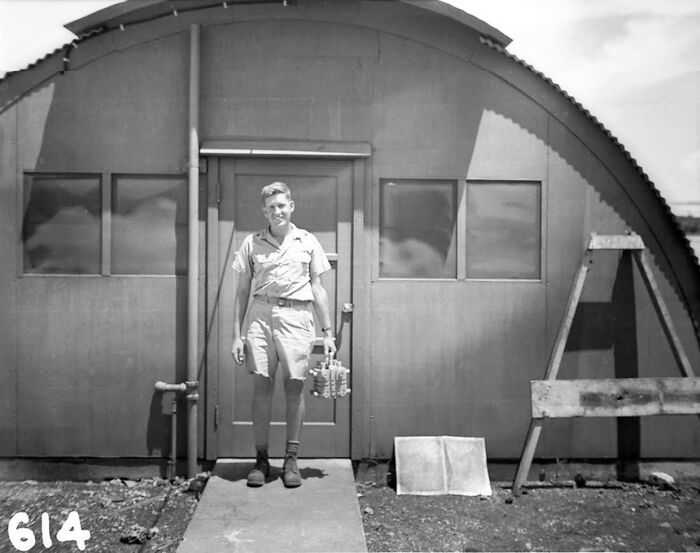Este es el físico Harold Agnew sosteniendo el núcleo nuclear de la bomba atómica Fat Man, que fue lanzada sobre Nagasaki en 1945. La bomba acabó matando a unas 80.000 personas, muchas de las cuales murieron por los efectos a largo plazo que causó la bomba, como enfermedades por radiación y leucemia.Este hilo toca el lado oscuro de la humanidad y demuestra que no siempre seríamos capaces de reconocer a los monstruos. Porque se ven y actúan igual que nosotros. Porque parecen completamente normales. Y sólo cuando te das cuenta de que estás viendo fotos de asesinos y secuestradores, empiezas a buscar cualquier indicio de que bajo esos exteriores inocentes y fachadas amistosas se esconden corazones y almas llenas de malicia y pura maldad. A pesar de que algunos psicópatas se mezclan en la sociedad como un lobo con piel de cordero, hay algunos signos sutiles a los que debes prestar atención. Sin embargo, ten en cuenta que no todos los malvados son psicópatas y que no todos los psicópatas son necesariamente malvados. Sin embargo, los psicópatas tienden a manipular y herir a los demás, y carecen de empatía por sus semejantes.
Foto #10: La última foto de las hermanas Webster y su amiga
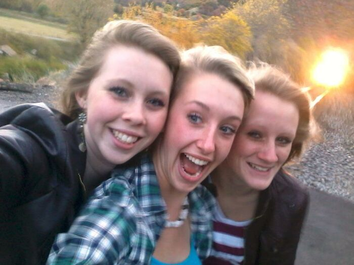Tomando un selfie, todos parecen tan despreocupados y luego ves la luz brillante detrás de ellos y sólo quieres gritarles que se aparten de la vía del tren
Foto #11: El violín Hartley
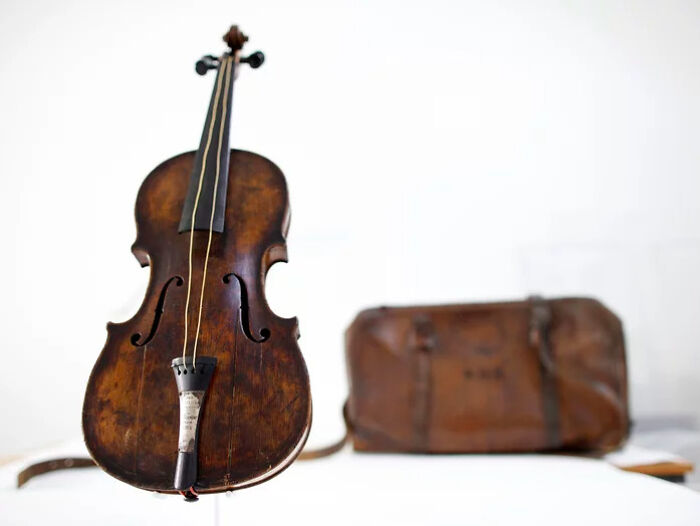Este es el violín Hartley, propiedad de Wallace Hartley, el director de la banda y principal violinista del Titanic. Era el que llevaba consigo y tocaba la noche en que se hundió el barco. Los supervivientes dicen haber visto a Hartley y a su banda en la cubierta del barco durante el hundimiento, tocando para calmar a los pasajeros mientras subían a los insuficientes botes salvavidas. Hartley y todos los miembros de la banda murieron en el hundimiento. Tenemos su violín porque, en algún momento desconocido antes de su muerte, Hartley volvió a guardarlo en su estuche con monograma para protegerlo. Así fue como lo encontró, flotando en el campo de escombros, uno de los barcos enviados a recuperar los cuerpos del naufragio. Pudieron identificarlo como el de Hartley gracias a una placa de latón grabada, y se lo devolvieron a su prometida, que lo conservó hasta su muerte. Su familia lo autentificó y lo vendió por 1,6 millones de dólares a una organización que colecciona artefactos del Titanic".
Foto #12: John Edward Robinson y su familia
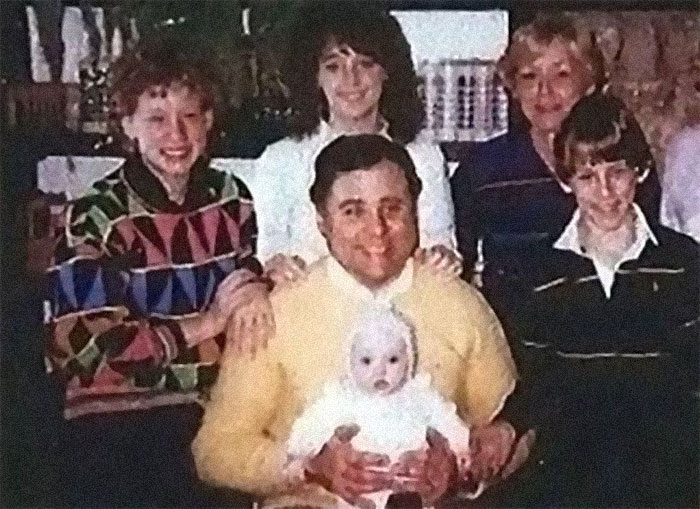Este es el asesino en serie John Edward Robinson (jersey amarillo) sosteniendo a la bebé Tiffany Stasi, cuya madre asesinó el día anterior. Más tarde entregó a la bebé Tiffany a su hermano, diciendo que era adoptada. Su hermano, junto con Tiffany, no descubrió la verdad durante 15 años. Sólo ocho de sus víctimas han sido identificadas, y está en el corredor de la muerte desde el año 2000.Healthline señala que los psicópatas suelen ser engañosos, imprudentes y participan en conductas de riesgo. También son socialmente irresponsables, tienden a ignorar por completo los derechos y las opiniones de los demás, y les resulta muy difícil distinguir entre lo que está bien y lo que está mal. En otras palabras, su brújula moral es metafórica es o bien disfuncional (es decir, actúan de forma inmoral porque eligen hacer lo incorrecto) o inexistente (están siendo amorales y no pueden distinguir entre el bien y el mal). Además, los psicópatas rara vez muestran empatía o remordimiento por sus acciones, mienten a menudo, manipulan y dañan a los demás y, en general, hacen caso omiso de la responsabilidad y la seguridad. Como resultado, a menudo pueden tener continuos problemas con la ley. Sin embargo, estas cosas no se notan sólo con una foto. El mal también sonríe.
Foto #13: El vulcanólogo estadounidense David A. Johnston
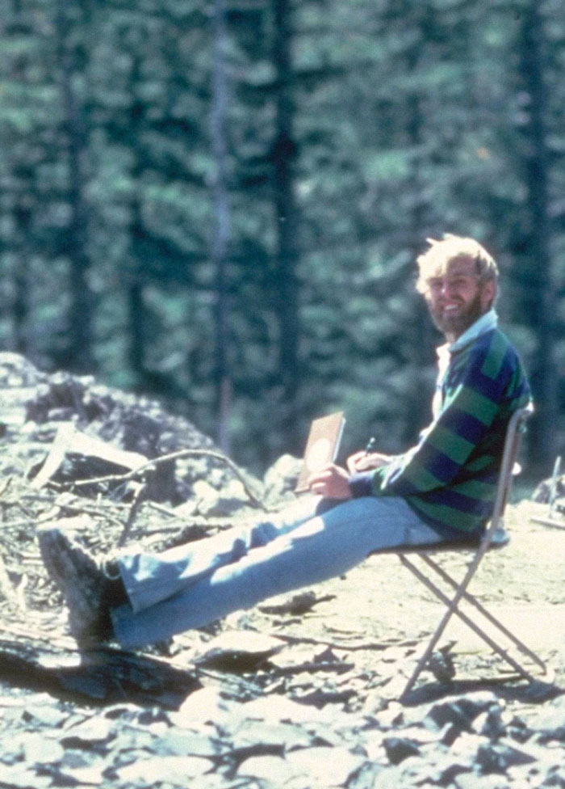13 horas después de tomar la fotografía, el 18 de mayo de 1980, el volcán entró en erupción y mató a 57 personas, incluido él.
Foto #14: Celebración del Día de la Constitución polaca en Chicago
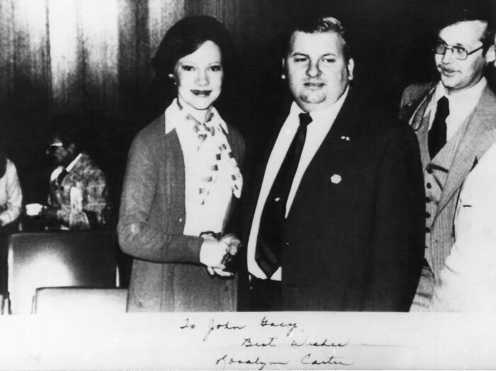Esta es una foto de la Primera Dama Rosalynn Carter en 1978 estrechando la mano del asesino en serie John Wayne Gacy, que estaba activo en la política en ese momento. Para entonces, ya había matado a más de 20 jóvenes. Lleva una "S" en la solapa, que le fue entregada por el Servicio Secreto para indicar que había recibido autorización de seguridad. La foto incluso estaba firmada: "Para John Gacy, mis mejores deseos, Rosalynn Carter".
Foto #15: Dos caminos en la nieve. Sólo uno lleva a la vida
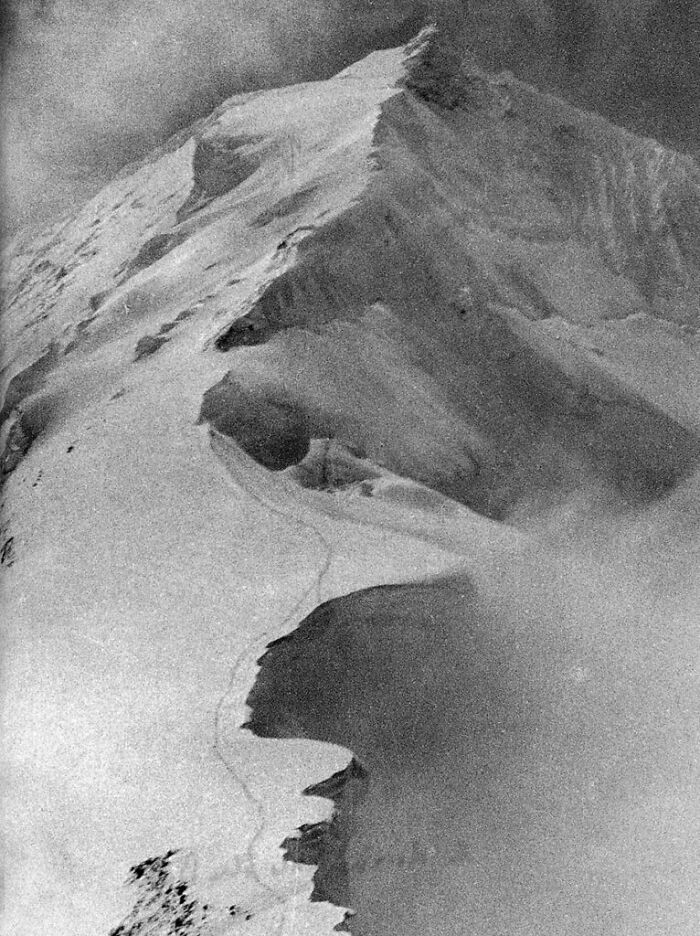Esta es la foto que Kurt Diemberger tomó después de que su compañero, el ilustre alpinista Hermann Buhl, cayera al abismo en la montaña del Himalaya Chogolisa. Buhl caminaba detrás de Diemberger y abandonó momentáneamente el camino, tras lo cual cayó por una cornisa saliente. Permanece en el hielo.
Foto #16: Una foto fija de un vídeo
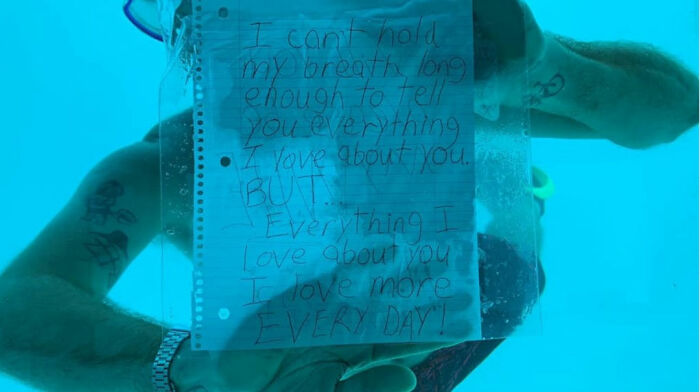Un hombre que nadó hasta su novia en su habitación de hotel bajo el agua mientras estaba de vacaciones en Tanzania, y le propuso matrimonio con una nota y un anillo. Murió antes de poder salir del agua.
Foto #17: Foto del asesino en serie Christopher Wilder acechando en el fondo durante un desfile de la revista Seventeen en el centro comercial Meadows en Las Vegas el 1 de abril de 1984
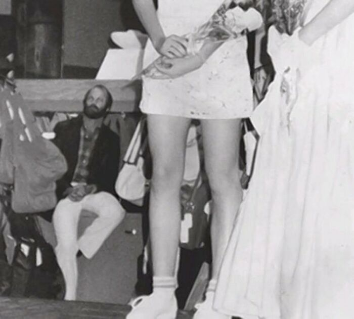Wilder secuestraría y mataría a Michelle Korfman, de 17 años, tras conocerla en este desfile de moda (de pie en primer plano).
Foto #18: La Mataviejitas, Juana Barraza
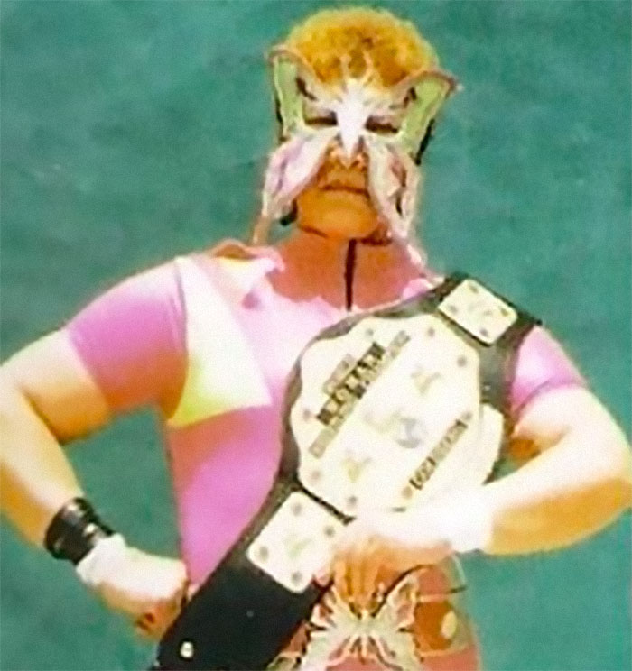Aquí está Juana Barraza, ex Luchadora y asesina en serie mexicana. Su madre la vendió a un hombre por tres cervezas cuando tenía 12 años hasta que su padrastro la encontró a los 17. Terminó con cuatro matrimonios fracasados y cuatro hijos y trabajó haciendo trabajos esporádicos como limpiadora. Estranguló a ancianas que le recordaban a su madre fingiendo que trabajaba para el gobierno.
Foto #19: Excursionista desaparecido en la Gran Isla (Hawaii)
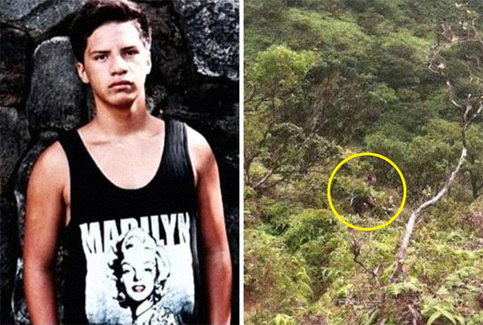Un chico desapareció mientras hacía senderismo en un lugar de la Gran Isla de Hawai. Envió por mensaje de texto algunas fotos del paisaje mientras hacía senderismo. Después de que no apareciera en casa, su familia se dio cuenta de que había alguien merodeando entre los arbustos en las fotos que había enviado. Si no recuerdo mal, i familia que vive en Hawái dijo que el lugar es ilegal para ir de excursión, así que no era un sendero muy poblado.
Foto #20: Esta foto de Travis Alexander por Jodi Arias... momentos antes de matarlo. Es inquietante para mí
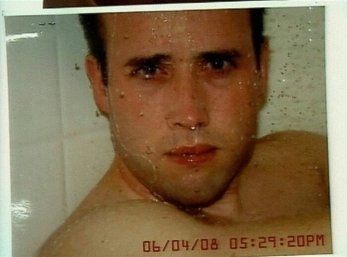
Foto #21: Fiesta de la Casa de Florida de Tyler Hadley
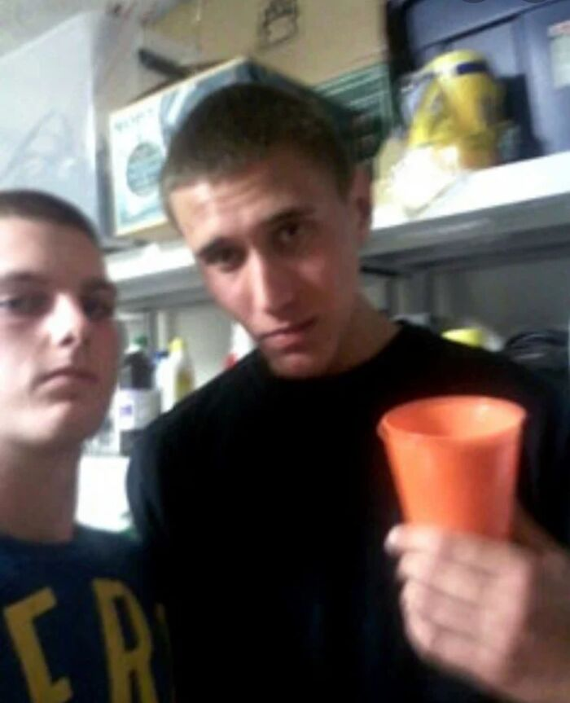Esta es una foto de Tyler Hadley, el que sostiene una copa, en una fiesta en su casa. Justo antes de esta fiesta, asesinó a su madre y a su padre con un martillo y escondió sus cuerpos en el dormitorio principal. Durante la fiesta, Tyler le enseñó a su mejor amigo, Michael Mandell, la habitación donde mató a sus padres, y éste tomó esta foto porque no estaba seguro de cuándo volvería a ver a Tyler.
Foto #22: Los Whitaker en una cena de graduación
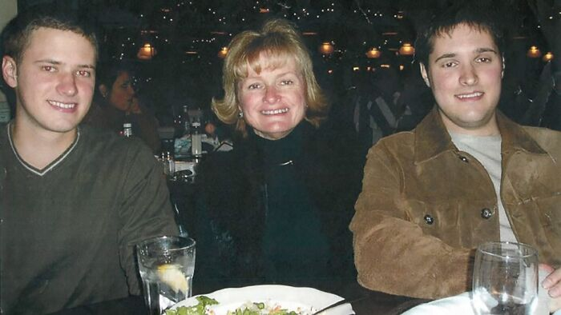El chico de la derecha, Bart Whitaker, había pagado a dos de sus compañeros para que asesinaran a su familia esa noche. Matarían a la madre y al hermano, pero el padre, que tomó la foto, sobrevivió. Bart fue posteriormente condenado a muerte, pero después de que su padre se opusiera firmemente, el gobernador de Texas, Greg Abbott, le concedió clemencia, y ahora cumple cadena perpetua.
Foto #23: 23 En los "viejos tiempos" era habitual hacerse fotos con familiares muertos. La mujer del medio está muerta
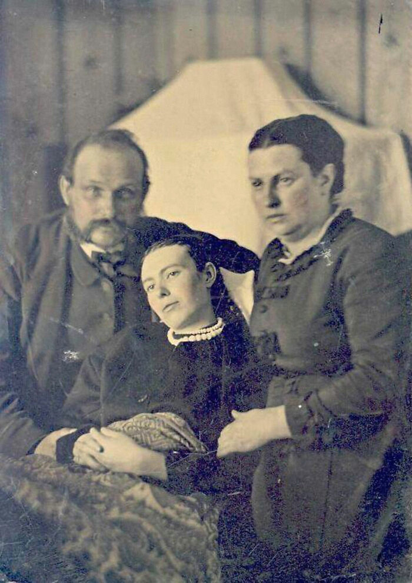
Foto #24: Los hermanos Menéndez aparecieron en el fondo de una tarjeta de baloncesto y la foto para la tarjeta fue tomada después de haber matado a sus padres
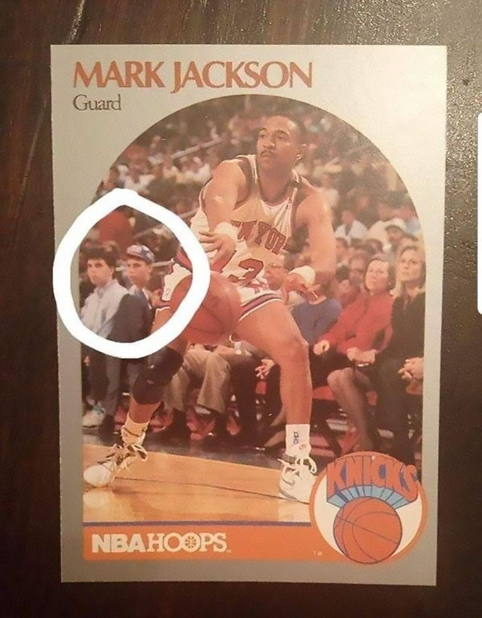
Foto #25: Vuelo 571 de la Fuerza Aérea Uruguaya
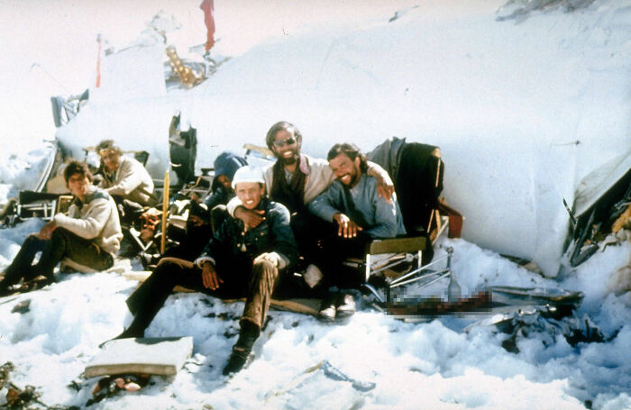Esta foto fue tomada a un grupo de supervivientes del accidente del vuelo 571 de la Fuerza Aérea Uruguaya en los Andes. Finalmente se salvaron, pero tuvieron que recurrir al canibalismo para sobrevivir. Todos sonríen en la foto, pero se vuelve espeluznante cuando se ve la columna vertebral humana a la derecha de ellos en la foto.